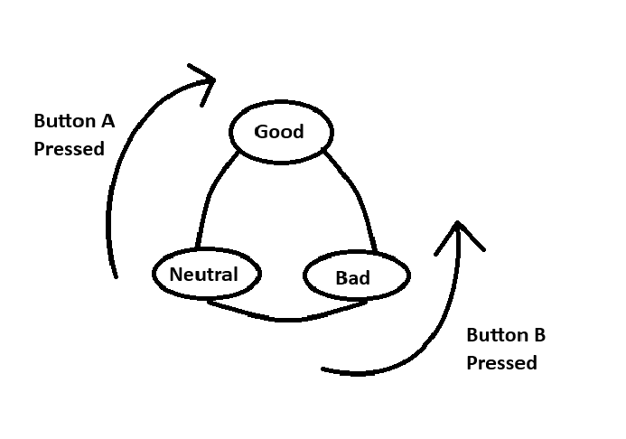
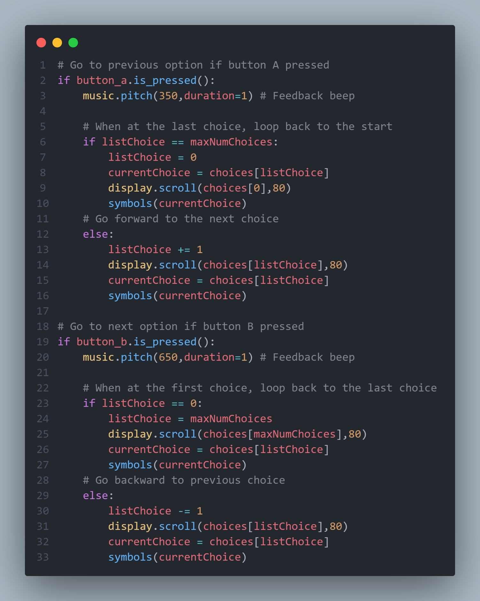
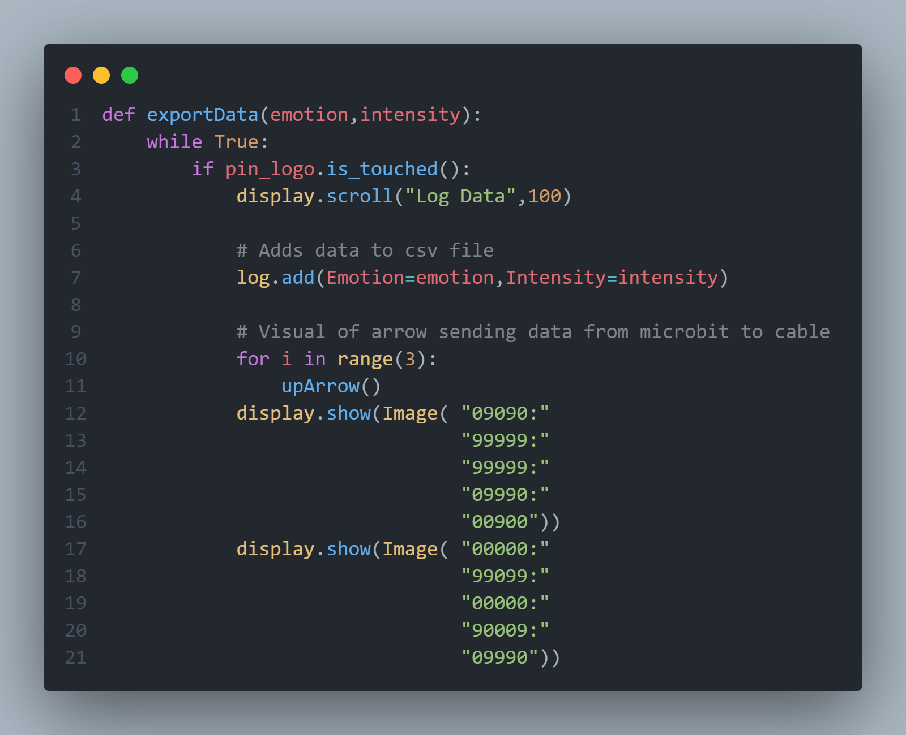

Create
Weekly Logs
Click here to see weekly logsUnit Testing/Bug Testing
When I was uploading the code to the microbit, I would often encounter many problems. Thankfully many of which were easy to bugfix, such as a missing bracket or mistyped variable name. Halfway through coding the microbit, I decided to implement unit testing. Unit testing is when you test bits of the code at once, to help identify bugs and issues. Although unit testing is very time consuming, as you have to manually test small sections of the code at once, it also helped my optimise my code. I found many lines of code which could be simplified, whilst also fixing the occasional missing brackets or misstyped variable name. Overall, it reduced the amount of bugs I would have, and reduced the amount of major bugs I would have in the future.
Problem Encountered
The first problem I encountered when coding the microbit was the Button A and Button B functionality. I wanted to create a way for the user to cycle between the options there were given, such as the emotions "good","neutral","bad". Button A would cycle through the options clockwise. Whilst button B would cycle through the options counter clockwise as shown in the picture below.
This seemingly simple function caused alot of headache, and many days were wasted trying to find a solution. One technique I used to counteract this problem was with abstraction. I broke down the function to its core components, and realised I could make a variable to store the "currentChoice" as an integer. Such as having "bad" = 0, "neutral" = 1, and "happy" = 2. By assigning a numerical value to these strings, I could increase the "currentChoice" by 1 using button A, and decrease it with button B. For example, if the "currentChoice" is 2 which represents "happy", I could change it to "neutral" just by decreasing it by -1, changing the "currentChoice" to a 1, which represents "neutral".
This is the final iteration of the code I came up with. I believe that it is extremely overcomplicated and overengineered. I hope to revisit this problem in the future, to see if I am able to make it more elegant, and optimise it more.
Vital Piece of Code
My most vital piece of code would be when the microbit is logging and exporting the data into a CSV file.
This piece of code is very simple, however it is the most important. It is a function which takes in "emotion" and the "intensity". Once the user finished answering the questions given by the microbit, they simply plug in the usb and tap the logo. This stores all the data from the user, and logs them in a CSV file. After, the python graphing code can be run, which reads this CSV file directly from the microbit, and graphs the data. Lines 10 and onwards calls the "upArrow()" function, which is an animation I created which depicts an arrow sending data to the computer.